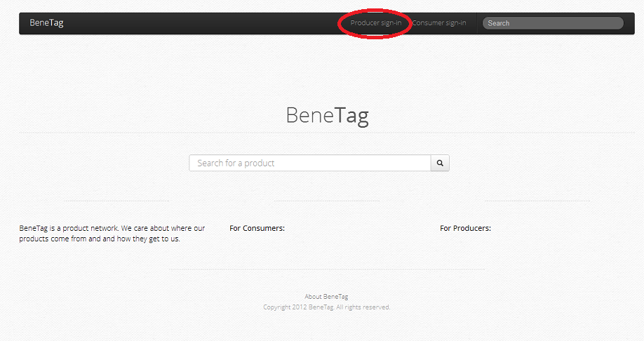
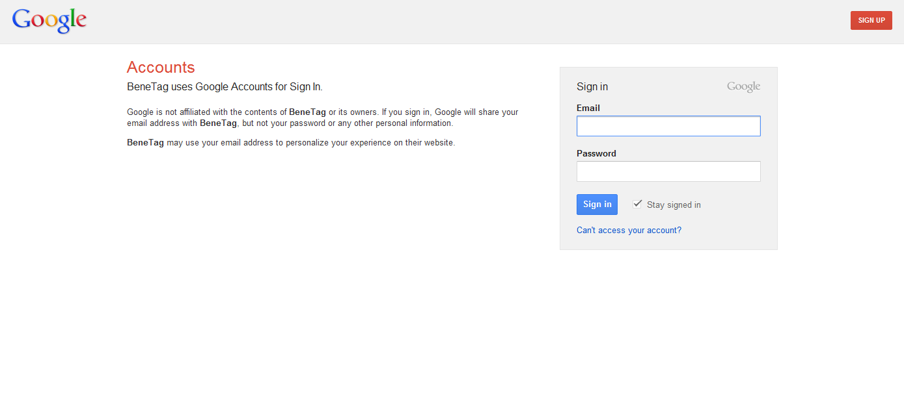
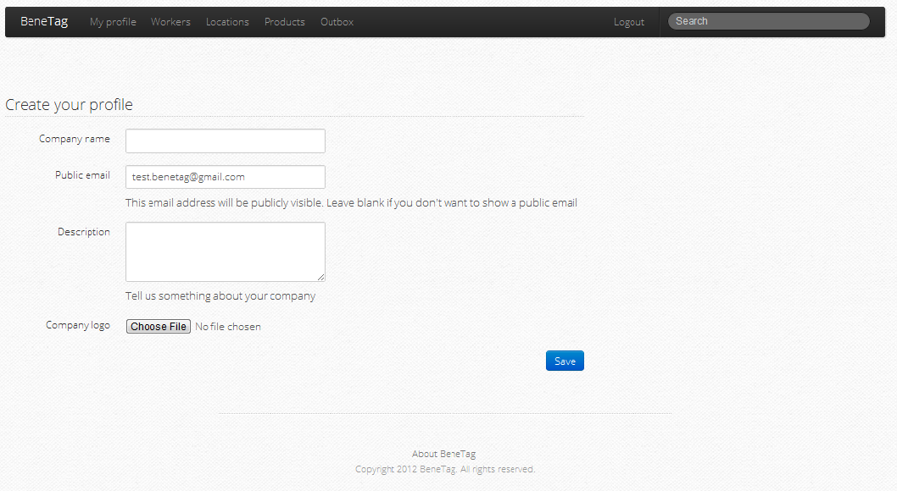
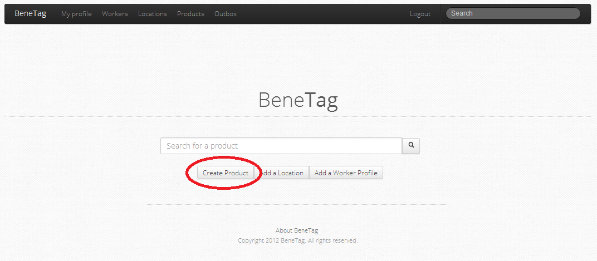
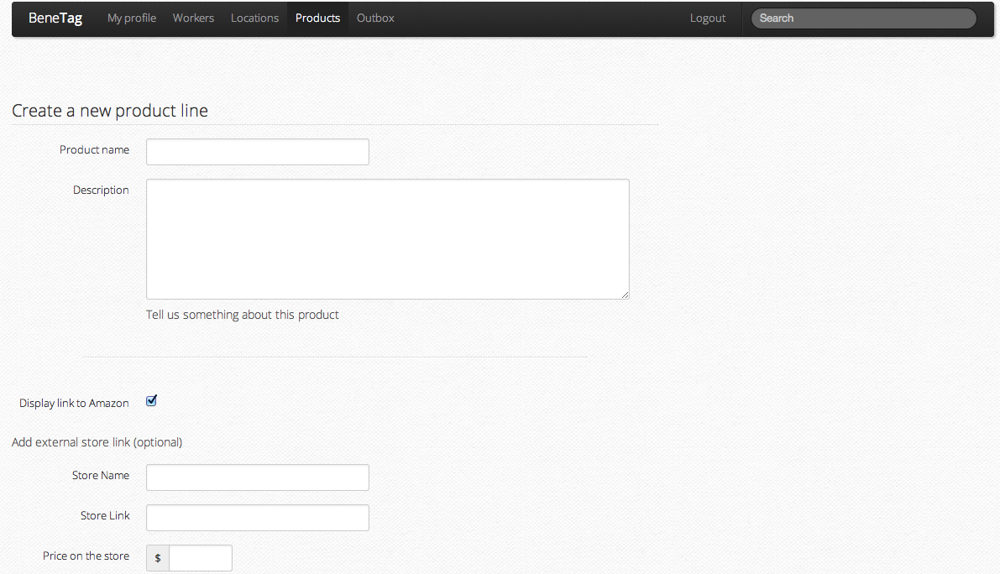
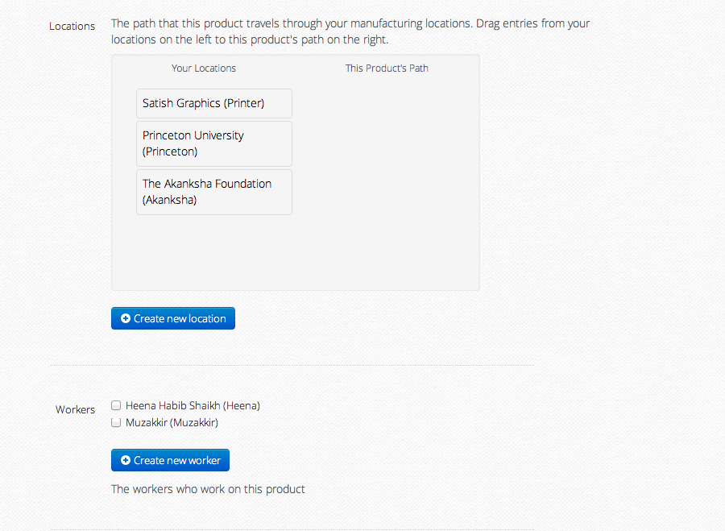
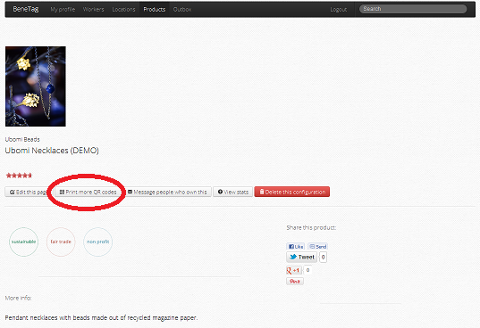
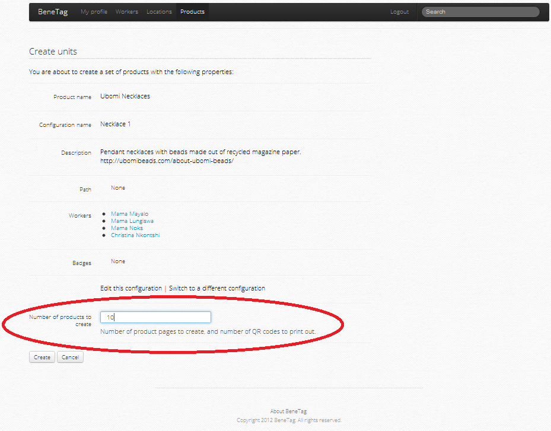
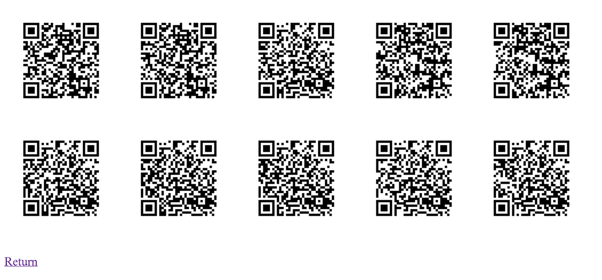

BeneTag
Get started with BeneTag today!
I'm a producer. How do I create a BeneTag page for my products?
Step 1: Register as a producer. (Your account will be verified by BeneTag within 3 business days). Alternatively, use the pre-verified account
test.benetag@gmail.com (password: benetest).



Step 2: Add a product line.

-
Tell us about your product. If your product is sold on Amazon, we'll link to it automatically. Alternatively, you can also link to your own online store front.

-
Tell us about where your product was made. Add locations, and then drag the locations into a product path. The product path traces the path from
where a product originates to where it is eventually purchased.

-
Tell us about the people who made the product. Each worker you add will be saved in a general worker pool, so that you can reuse worker profiles
for future product lines.
Congratulations! Your product page is now complete. You can come back and edit it at any time.
-
Now we can print out QR codes and attach them to actual products. Each QR code will uniquely link an individual product unit within a product line to the
product page.



-
Once consumers add your products to their closet, we can send them messages to update them on the product.
-
For different batches of the same product, we can also create additional product configurations. New configurations will
inherit the product description and picture, but may contain new locations and workers.